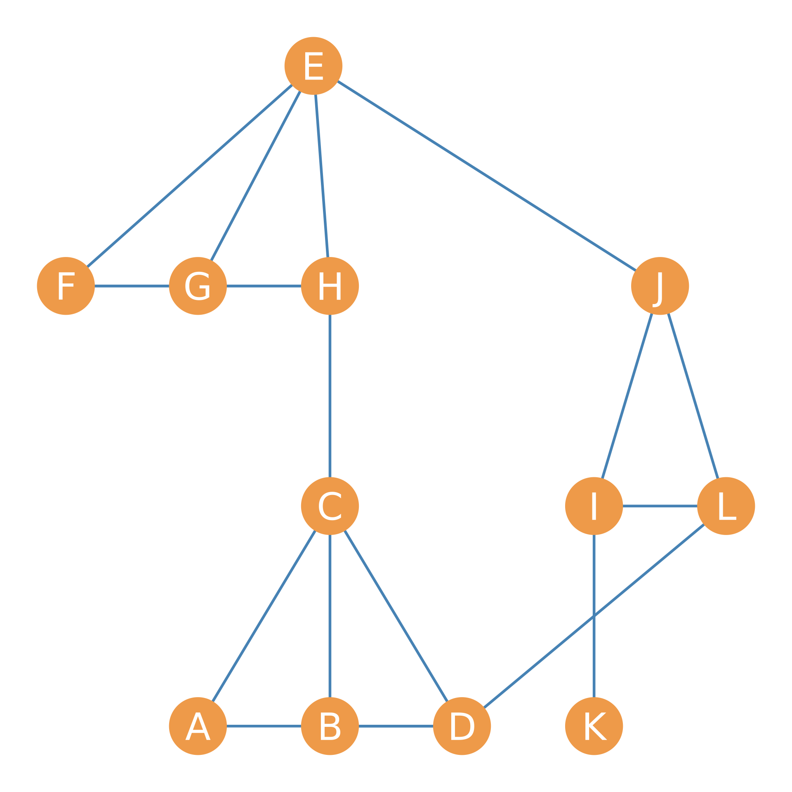
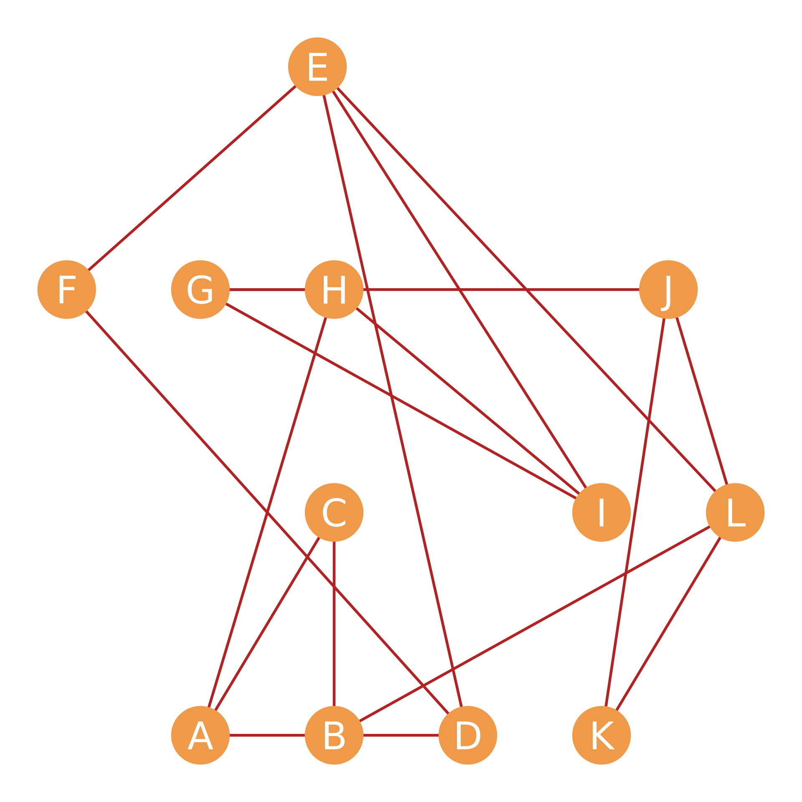
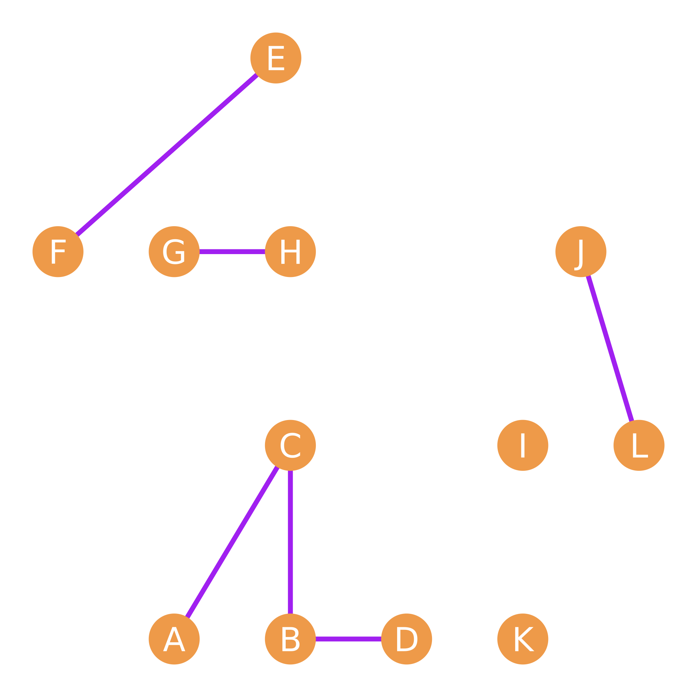
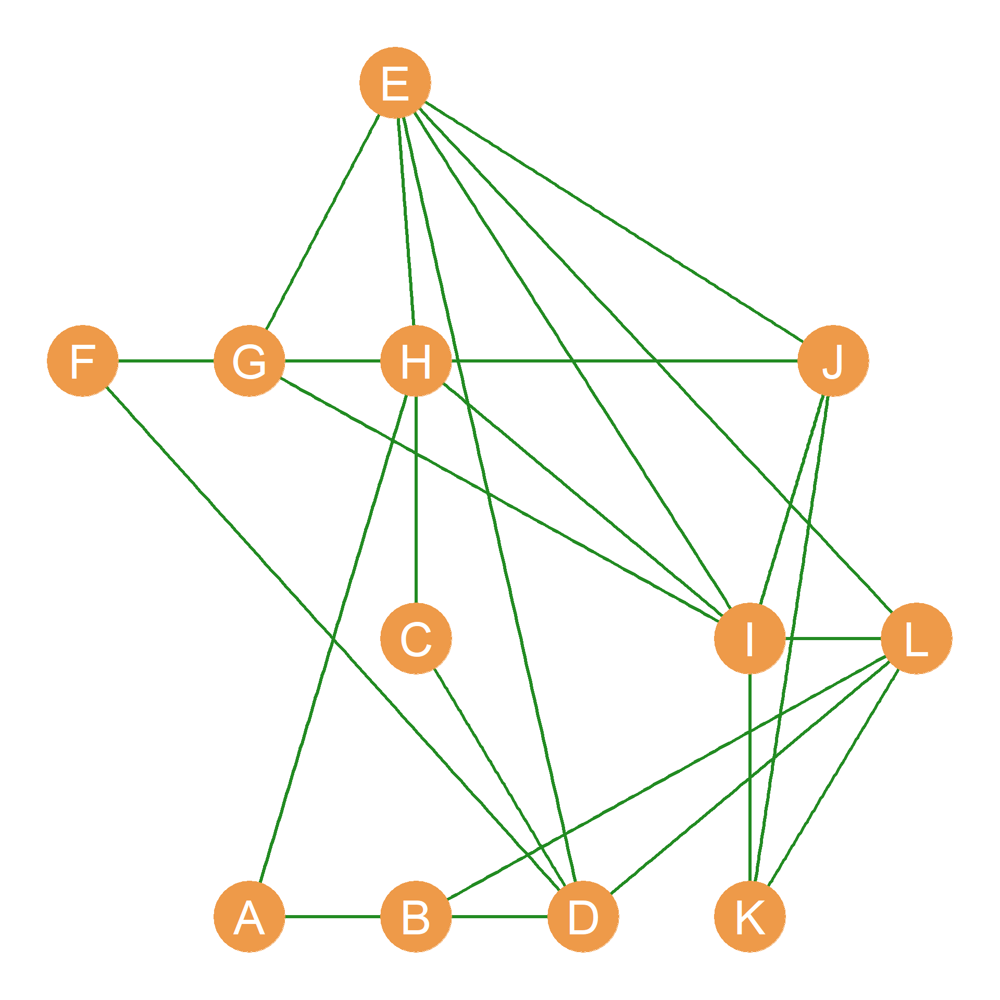

| A | B | C | D | E | F | G | H | I | J | K | L | |
|---|---|---|---|---|---|---|---|---|---|---|---|---|
| A | -- | 1 | 2 | 1 | 0 | 0 | 0 | 1 | 0 | 0 | 0 | 0 |
| B | 1 | -- | 2 | 2 | 0 | 0 | 0 | 0 | 0 | 0 | 0 | 1 |
| C | 2 | 2 | -- | 1 | 0 | 0 | 0 | 1 | 0 | 0 | 0 | 0 |
| D | 1 | 2 | 1 | -- | 1 | 1 | 0 | 0 | 0 | 0 | 0 | 1 |
| E | 0 | 0 | 0 | 1 | -- | 2 | 1 | 1 | 1 | 1 | 0 | 1 |
| F | 0 | 0 | 0 | 1 | 2 | -- | 1 | 1 | 0 | 0 | 0 | 0 |
| G | 0 | 0 | 0 | 0 | 1 | 1 | -- | 2 | 1 | 1 | 0 | 0 |
| H | 1 | 0 | 1 | 0 | 1 | 1 | 2 | -- | 1 | 0 | 0 | 0 |
| I | 0 | 0 | 0 | 0 | 1 | 0 | 1 | 1 | -- | 1 | 1 | 1 |
| J | 0 | 0 | 0 | 0 | 1 | 0 | 1 | 0 | 1 | -- | 1 | 2 |
| K | 0 | 0 | 0 | 0 | 0 | 0 | 0 | 0 | 1 | 1 | -- | 1 |
| L | 0 | 1 | 0 | 1 | 1 | 0 | 0 | 0 | 1 | 2 | 1 | -- |
22 Basic Matrix Operations
Since matrices are just an array of numbers, one powerful thing that we can do is perform arithmetic and algebraic operations on them. These include summing, multiplying, taking powers of matrices, and so forth. In this lesson, we discuss some basic matrix operations and their relevance for the analysis of social networks.
Our running example will be the pair of graphs shown in Figure 22.1. Suppose this is a network of twelve people who work at a (very) small company. We have recorded two types of relationships for each pair of persons: Whether they hang out together after work, and whether they get assigned to work together in team projects (we will call these “hang out” and “co-working” relations for short).
Figure 22.1 (a), composed of nodes joined by blue edges, represents hanging out relations; Figure 22.1 (b) represents co-working relations. The corresponding adjacency matrices for the Figure 22.1 networks are shown in Table 22.1; Table 22.1 (a) (let’s call it \(\mathbf{H}\)) records hanging out relations and Table 22.1 (b) (let’s call it \(\mathbf{C}\)) records co-working relations.




| A | B | C | D | E | F | G | H | I | J | K | L | |
|---|---|---|---|---|---|---|---|---|---|---|---|---|
| A | -- | 0 | 1 | 1 | 0 | 0 | 0 | 0 | 0 | 0 | 0 | 0 |
| B | 0 | -- | 1 | 1 | 0 | 0 | 0 | 0 | 0 | 0 | 0 | 0 |
| C | 1 | 1 | -- | 1 | 0 | 0 | 0 | 1 | 0 | 0 | 0 | 0 |
| D | 1 | 1 | 1 | -- | 0 | 0 | 0 | 0 | 0 | 0 | 0 | 1 |
| E | 0 | 0 | 0 | 0 | -- | 1 | 1 | 1 | 0 | 1 | 0 | 0 |
| F | 0 | 0 | 0 | 0 | 1 | -- | 1 | 1 | 0 | 0 | 0 | 0 |
| G | 0 | 0 | 0 | 0 | 1 | 1 | -- | 1 | 0 | 0 | 0 | 0 |
| H | 0 | 0 | 1 | 0 | 1 | 1 | 1 | -- | 0 | 0 | 0 | 0 |
| I | 0 | 0 | 0 | 0 | 0 | 0 | 0 | 0 | -- | 1 | 1 | 1 |
| J | 0 | 0 | 0 | 0 | 1 | 0 | 0 | 0 | 1 | -- | 0 | 1 |
| K | 0 | 0 | 0 | 0 | 0 | 0 | 0 | 0 | 1 | 0 | -- | 0 |
| L | 0 | 0 | 0 | 1 | 0 | 0 | 0 | 0 | 1 | 1 | 0 | -- |
| A | B | C | D | E | F | G | H | I | J | K | L | |
|---|---|---|---|---|---|---|---|---|---|---|---|---|
| A | -- | 1 | 1 | 0 | 0 | 0 | 0 | 1 | 0 | 0 | 0 | 0 |
| B | 1 | -- | 1 | 1 | 0 | 0 | 0 | 0 | 0 | 0 | 0 | 1 |
| C | 1 | 1 | -- | 0 | 0 | 0 | 0 | 0 | 0 | 0 | 0 | 0 |
| D | 0 | 1 | 0 | -- | 1 | 1 | 0 | 0 | 0 | 0 | 0 | 0 |
| E | 0 | 0 | 0 | 1 | -- | 1 | 0 | 0 | 1 | 0 | 0 | 1 |
| F | 0 | 0 | 0 | 1 | 1 | -- | 0 | 0 | 0 | 0 | 0 | 0 |
| G | 0 | 0 | 0 | 0 | 0 | 0 | -- | 1 | 1 | 1 | 0 | 0 |
| H | 1 | 0 | 0 | 0 | 0 | 0 | 1 | -- | 1 | 0 | 0 | 0 |
| I | 0 | 0 | 0 | 0 | 1 | 0 | 1 | 1 | -- | 0 | 0 | 0 |
| J | 0 | 0 | 0 | 0 | 0 | 0 | 1 | 0 | 0 | -- | 1 | 1 |
| K | 0 | 0 | 0 | 0 | 0 | 0 | 0 | 0 | 0 | 1 | -- | 1 |
| L | 0 | 1 | 0 | 0 | 1 | 0 | 0 | 0 | 0 | 1 | 1 | -- |
22.1 Matrix Addition and Subtraction
Perhaps the simplest operation we can perform on two matrices is to add them. To add two matrices, we simply add up the corresponding entries in each cell. In matrix notation:
\[ \mathbf{H} + \mathbf{C} = h_{ij} + c_{ij} \tag{22.1}\]
Where \(h_{ij}\) is the corresponding entry for nodes i and j in the hanging out adjacency matrix \(\mathbf{H}\), and \(c_{ij}\) is the same entry in the co-working adjacency matrix \(\mathbf{C}\).
Why would we want to do this? Well, if we were studying the network shown in Figure 22.1, we might be interested in which dyads have uniplex (single-stranded) relations and which have multiplex (multi-stranded) relations. That is, while some actors in the network either hang out together or work together, some of them do both. Adding up the adjacency matrices shown in Table 22.1 will tell us who these are. The result is shown in Table 22.2.
Table 22.2 shows that the \(BC\) dyad has a multiplex relation (there is a “2” in the corresponding cell entry) and so do the \(AC\), \(FH\), \(GH\), \(EF\), and \(JL\) dyads. A graph showing the nodes linked only by multiplex relations (hanging out and co-working) is shown in Figure 22.1 (c).
Note that matrix subtraction works the same way:
\[ \mathbf{H} - \mathbf{C} = h_{ij} - c_{ij} \tag{22.2}\]
To subtract two matrices, we simply subtract the corresponding entries in each cell. Why would we ever want to do this? Perhaps we could focus on dyads in the network connected by a single, special-purpose uniplex tie, while disregarding both disconnected and multiplex-connected dyads.
| A | B | C | D | E | F | G | H | I | J | K | L | |
|---|---|---|---|---|---|---|---|---|---|---|---|---|
| A | -- | 1 | 0 | 1 | 0 | 0 | 0 | 1 | 0 | 0 | 0 | 0 |
| B | 1 | -- | 0 | 0 | 0 | 0 | 0 | 0 | 0 | 0 | 0 | 1 |
| C | 0 | 0 | -- | 1 | 0 | 0 | 0 | 1 | 0 | 0 | 0 | 0 |
| D | 1 | 0 | 1 | -- | 1 | 1 | 0 | 0 | 0 | 0 | 0 | 1 |
| E | 0 | 0 | 0 | 1 | -- | 0 | 1 | 1 | 1 | 1 | 0 | 1 |
| F | 0 | 0 | 0 | 1 | 0 | -- | 1 | 1 | 0 | 0 | 0 | 0 |
| G | 0 | 0 | 0 | 0 | 1 | 1 | -- | 0 | 1 | 1 | 0 | 0 |
| H | 1 | 0 | 1 | 0 | 1 | 1 | 0 | -- | 1 | 0 | 0 | 0 |
| I | 0 | 0 | 0 | 0 | 1 | 0 | 1 | 1 | -- | 1 | 1 | 1 |
| J | 0 | 0 | 0 | 0 | 1 | 0 | 1 | 0 | 1 | -- | 1 | 0 |
| K | 0 | 0 | 0 | 0 | 0 | 0 | 0 | 0 | 1 | 1 | -- | 1 |
| L | 0 | 1 | 0 | 1 | 1 | 0 | 0 | 0 | 1 | 0 | 1 | -- |
In which case, subtracting the two matrices, and then taking the absolute value of each of the cell entries (e.g., turning negative entries into positive ones), written \(|h_{ij} - c_{ij}|\) will result in a binary matrix that will only contain ones for people who are either hangout buddies or workmates but not both. Such a matrix is shown in Table 22.3 and corresponds to the graph shown in Figure 22.1 (d).
22.2 The Matrix Dot Product
Another way of figuring out which pairs of people in a network have multiplex ties is to compute the matrix dot product (symbol: \(\cdot\)), sometimes this is also called the Hadamard product named after French mathematician Jacques Hadamard, (symbol: \(\circ\)). Just like matrix addition, we find the matrix dot product by multiplying the corresponding entries in each of the matrices. In matrix format:
\[ \mathbf{H} \circ \mathbf{C} = h_{ij} \times c_{ij} \tag{22.3}\]
If we take the dot product of two adjacency matrices like \(\mathbf{H}\) and \(\mathbf{C}\), then the resulting matrix will have a one in a given cell only if \(h_{ij} = 1\) and \(c_{ij} = 1\). Otherwise, it will have a zero. This means that the dot product of two adjacency matrices will retain only the multiplex ties and erase all the other ones. The result of the dot products of the adjacency matrices shown in Table 22.1 is shown in Table 22.4.
| A | B | C | D | E | F | G | H | I | J | K | L | |
|---|---|---|---|---|---|---|---|---|---|---|---|---|
| A | -- | 0 | 1 | 0 | 0 | 0 | 0 | 0 | 0 | 0 | 0 | 0 |
| B | 0 | -- | 1 | 1 | 0 | 0 | 0 | 0 | 0 | 0 | 0 | 0 |
| C | 1 | 1 | -- | 0 | 0 | 0 | 0 | 0 | 0 | 0 | 0 | 0 |
| D | 0 | 1 | 0 | -- | 0 | 0 | 0 | 0 | 0 | 0 | 0 | 0 |
| E | 0 | 0 | 0 | 0 | -- | 1 | 0 | 0 | 0 | 0 | 0 | 0 |
| F | 0 | 0 | 0 | 0 | 1 | -- | 0 | 0 | 0 | 0 | 0 | 0 |
| G | 0 | 0 | 0 | 0 | 0 | 0 | -- | 1 | 0 | 0 | 0 | 0 |
| H | 0 | 0 | 0 | 0 | 0 | 0 | 1 | -- | 0 | 0 | 0 | 0 |
| I | 0 | 0 | 0 | 0 | 0 | 0 | 0 | 0 | -- | 0 | 0 | 0 |
| J | 0 | 0 | 0 | 0 | 0 | 0 | 0 | 0 | 0 | -- | 0 | 1 |
| K | 0 | 0 | 0 | 0 | 0 | 0 | 0 | 0 | 0 | 0 | -- | 0 |
| L | 0 | 0 | 0 | 0 | 0 | 0 | 0 | 0 | 0 | 1 | 0 | -- |
As we can see, the only dyads that have non-zero entries in Table 22.4 are the multiplex dyads in Table 22.2. The resulting network, comprising the combined “hanging + co-working” relationship, is shown in Figure 22.1 (c). Note that this network is much more sparse than either of the other two, since there’s an edge between nodes only when they are adjacent in both the Figure 22.1 (a) and Figure 22.1 (b) networks.
22.3 The Matrix Transpose
One thing we can do with a matrix is “turn it 90 degrees” so that the rows of the new matrix correspond to the columns of the original matrix, and the columns of the new matrix correspond to the rows of the original matrix. This is called the matrix transpose (symbol: \(^T\)).
For instance, if we have a matrix \(\mathbf{A}_{4 \times 5}\) of dimensions \(4 \times 5\) (four rows and five columns), then the transpose \(A^T_{5 \times 4}\) will have five rows and four columns, with the respective entries in each matrix given by the formula:
\[ a_{ij} = a^T_{ji} \] That is the number that appears in the first matrix in the \(i^{th}\) row and \(j^{th}\) column, and now appears in the transposed version of the matrix in the \(j^{th}\) row and \(i^{th}\) column.
An example of a matrix and its transpose is shown in Table 23.1.
| 3 | 4 | 5 |
| 7 | 9 | 3 |
| 4 | 6 | 2 |
| 5 | 3 | 4 |
| 2 | 5 | 4 |
| 3 | 7 | 4 | 5 | 2 |
| 4 | 9 | 6 | 3 | 5 |
| 5 | 3 | 2 | 4 | 4 |
So let’s check out how the transpose works. The original matrix in Table 23.1 (a) has five rows and three columns. The transposed matrix has three rows and five columns. We can find the same numbers in the original and transposed matrices by switching the rows and columns. Thus, in the original matrix, the number in the third row and second column is six (\(a_{32} = 6\)). In the transposed version of the matrix, the same 6 appears in the second row and third column (\(a^T_{23} = 6\)). If you check, you’ll see that’s the case for each number! Thus, the transposed version of a matrix has the same information as the original; it is just that the rows and columns are switched. While this might seem like a totally useless thing to do (or learn) at the moment, we will see in Chapter 33 that the matrix transpose comes in very handy for analyzing social networks, particularly two-mode networks and cliques.